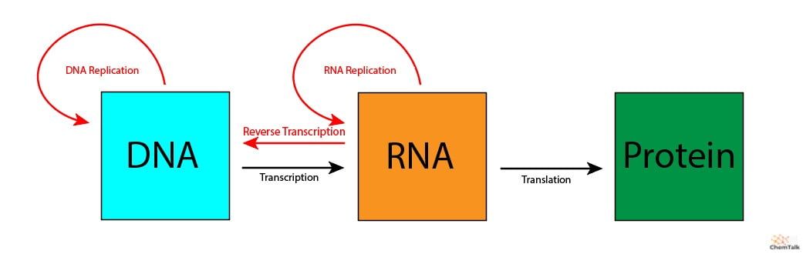
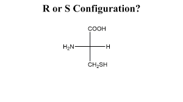

3D Molecular Viewer
Controls
💾 Saved Views
Glucose (C₆H₁₂O₆)
Type: Monosaccharide
Role: Primary energy source
Structure: 6-carbon ring
Features: Glycolysis substrate
⚠️ Desktop Only: This 3D molecular viewer is optimized for desktop browsers and may not function correctly on mobile devices.
3D rendering powered by Three.js
General Chemistry
⚡ Critical Concepts to Master
Key Thermodynamics Relationships
If ΔG = 0: System is at equilibrium
If ΔG > 0: Reaction is non-spontaneous
Key Topics: Atomic Structure, Periodic Trends, Chemical Bonding, Acid-Base Chemistry, Thermodynamics, Redox Reactions
📚 Complete Periodic Trends Reference
Ability to attract electrons in a chemical bond
✓ Increases LEFT → RIGHT (more protons attract electrons)
✗ Decreases TOP → BOTTOM (electron shielding increases)
Highest EN: F (4.0) > O (3.5) > N (3.0) > Cl (3.0)
Lowest EN: Fr (0.7), Cs (0.8), Rb (0.8)
Energy required to remove an electron from an atom
✓ Increases LEFT → RIGHT (stronger nuclear pull)
✗ Decreases TOP → BOTTOM (electrons farther from nucleus)
Highest IE: He, Ne, F, Ar (noble gases & halogens)
Lowest IE: Cs, Fr, Rb (alkali metals)
Distance from nucleus to outermost electron shell
✗ Decreases LEFT → RIGHT (more protons pull tighter)
✓ Increases TOP → BOTTOM (more electron shells added)
Largest: Fr, Cs, Rb (bottom left corner)
Smallest: He, H, Ne (top right corner)
Tendency to lose electrons and form positive ions
✗ Decreases LEFT → RIGHT (nonmetals gain electrons)
✓ Increases TOP → BOTTOM (easier to lose outer electrons)
Most Metallic: Fr, Cs, Ba, Ra
Least Metallic: F, O, N, Cl (nonmetals)
Energy change when an atom gains an electron
✓ Generally increases LEFT → RIGHT
~ Varies down groups (not always consistent)
Highest EA: Halogens (Cl, F, Br) - want one more e⁻
Lowest EA: Noble gases (stable, don't want e⁻)
Net positive charge felt by outer electrons
✓ Increases LEFT → RIGHT (more protons, same shielding)
~ Relatively constant down groups
Formula: Zeff = Z - S (nuclear charge - shielding)
Drives: Explains most periodic trends
- Electronegativity: "FON" - Fluorine, Oxygen, Nitrogen (most electronegative)
- Across Period: "PRIZE" - Protons increase, Radius decreases, Ionization increases, Zeff increases, Electronegativity increases
- Down Group: "RAISM" - Radius increases, Attraction decreases, Ionization decreases, Shielding increases, Metallic character increases
- Exception Alert: Noble gases have no electronegativity (don't form bonds)
- Electron configurations: 1s² 2s² 2p⁶ 3s² 3p⁶... (Aufbau principle)
- Electronegativity trends: Increases left→right, decreases top→bottom
- Ionization energy: Energy to remove electron (same trend as electronegativity)
- Atomic radius: Decreases across period, increases down group
- Valence electrons: Determine chemical properties and reactivity
- Ionic bonding: Transfer of electrons (metals + nonmetals)
- Covalent bonding: Sharing of electrons (nonmetals)
- VSEPR theory: Electron pairs repel to determine molecular shape
- Hybridization: sp (linear), sp² (trigonal planar), sp³ (tetrahedral)
- Polarity: Electronegativity differences create dipoles
- Intermolecular forces: H-bonding, dipole-dipole, London dispersion
- pH scale: pH = -log[H⁺], ranges 0-14 (7 is neutral)
- pKa: Acid dissociation constant (lower pKa = stronger acid)
- Henderson-Hasselbalch: pH = pKa + log([A⁻]/[HA])
- Buffers: Resist pH changes (weak acid + conjugate base)
- Titration curves: Show pH vs volume added, equivalence point
- Gibbs free energy: ΔG = ΔH - TΔS (predicts spontaneity)
- Enthalpy (ΔH): Heat content change in reaction
- Entropy (ΔS): Disorder/randomness of system
- Equilibrium constant: Keq = [products]/[reactants] at equilibrium
- Le Chatelier's principle: System shifts to counteract stress
- Temperature dependence: ΔG° = -RT ln(Keq)
- Oxidation: Loss of electrons (increase in oxidation state)
- Reduction: Gain of electrons (decrease in oxidation state)
- OIL RIG: Oxidation Is Loss, Reduction Is Gain
- Balancing: Half-reaction method, balance electrons transferred
- Standard potentials: E° values predict spontaneity (ΔG° = -nFE°)
General Chemistry Lab
⚡ Critical Concepts to Master
Understand acid-base titrations, equivalence points, and indicators
Understand dilution calculations and molarity relationships
Understand IR, NMR, and UV-Vis spectroscopy principles and applications
Know shapes, energy levels, and electron configurations
Key Topics: Titration, Dilutions, Spectroscopy, Electron Orbitals, Lab Safety, Data Analysis
- Types of Titrations: Acid-base, redox, complexometric, and precipitation titrations
- Indicators: Choosing appropriate indicators based on pH range and titration type
- Calculations: M1V1 = M2V2 for dilution and titration calculations
- End Point vs Equivalence Point: Understanding the difference and significance
- Common Errors: Identifying and minimizing errors in titration experiments
- IR Spectroscopy: Identifying functional groups based on absorption of infrared light
- NMR Spectroscopy: Determining molecular structure through nuclear spin interactions
- UV-Vis Spectroscopy: Analyzing electronic transitions in molecules
- Beer-Lambert Law: A = εbc for quantifying concentration using absorbance
- Sample Preparation: Proper techniques for preparing samples for spectroscopic analysis
- Orbital Types: s, p, d, f orbitals and their shapes
- Energy Levels: Understanding the energy hierarchy of orbitals (Aufbau principle)
- Electron Configuration: Writing configurations using the Pauli exclusion principle and Hund's rule
- Quantum Numbers: n, l, m_l, m_s and their significance in defining electron positions
- Orbital Hybridization: sp, sp², sp³ hybridization and its role in molecular geometry
- Safety Protocols: Proper use of personal protective equipment (PPE) and emergency procedures
- Chemical Handling: Safe storage, labeling, and disposal of chemicals
- Data Recording: Accurate and organized documentation of experimental data
- Error Analysis: Identifying sources of error and calculating uncertainties
- Graphing Data: Effective presentation of data using graphs and charts
Organic Chemistry
⚡ Critical Concepts to Master
🎯 Quick Reference: Amino Acid Classification
Key Topics: Functional Groups, Stereochemistry, Reaction Mechanisms, Carbohydrate Chemistry, Lipid Chemistry, Amino Acids & Peptides
- Hybridization: sp (180°), sp² (120°), sp³ (109.5°)
- Isomers: Same formula, different structure or arrangement
- Chirality: Non-superimposable mirror images (enantiomers)
- R/S nomenclature: Cahn-Ingold-Prelog priority rules
- Fischer projections: Horizontal = wedge, vertical = dash
- Optical activity: Rotation of plane-polarized light
- Alcohols (-OH): Found in sugars, glycerol; can be oxidized
- Aldehydes (R-CHO): Reducing sugars, formyl groups
- Ketones (R-CO-R): Ketose sugars, ketone bodies
- Carboxylic acids (-COOH): Fatty acids, amino acids (acidic)
- Esters (R-COO-R): Triglycerides, phospholipids
- Amines (-NH₂): Amino acids (basic group)
- Amides (-CONH-): Peptide bonds in proteins
- Thiols (-SH): Cysteine, disulfide bonds (S-S)
- Phosphates (-OPO₃²⁻): ATP, nucleic acids, phospholipids
- Nucleophiles: Electron-rich species (attack positive centers)
- Electrophiles: Electron-poor species (accept electrons)
- SN2: Backside attack, inversion of configuration, one step
- SN1: Carbocation intermediate, racemization, two steps
- Carbonyl additions: Nucleophile attacks C=O carbon
- Curved arrow notation: Shows electron movement in mechanisms
- General structure: H₂N-CHR-COOH (α-carbon center)
- Zwitterion: ⁺H₃N-CHR-COO⁻ (physiological pH)
- Isoelectric point (pI): pH where net charge = 0
- Peptide bond: Amide linkage between amino acids
- N-terminus & C-terminus: Free amino and carboxyl ends
- 20 standard amino acids: MEMORIZE structures and properties!
- Lipids: Fatty acids, triglycerides, phospholipids, steroids
- Fatty acid types: Saturated (no double bonds), unsaturated (double bonds)
- Carbohydrates: Monosaccharides (glucose, fructose), disaccharides (sucrose), polysaccharides (starch, glycogen)
- Glycosidic bonds: Link monosaccharides in disaccharides and polysaccharides
- Energy storage: Lipids (9 kcal/g), carbohydrates (4 kcal/g)
- Monosaccharides: Glucose, fructose, galactose (simple sugars)
- Disaccharides: Sucrose, lactose, maltose (two monosaccharides linked)
- Polysaccharides: Starch, glycogen, cellulose (long chains of monosaccharides)
- Glycosidic Bonds: Linkage between sugar units (α or β)
- Mutarotation: Interconversion between α and β anomers in solution
- Fatty Acids: Saturated (no double bonds) vs. Unsaturated (one or more double bonds)
- Triglycerides: Glycerol + 3 fatty acids (main form of fat storage)
- Phospholipids: Glycerol + 2 fatty acids + phosphate group (cell membranes)
- Steroids: Four fused rings (cholesterol, hormones)
- Amphipathic Nature: Hydrophilic head and hydrophobic tail in phospholipids
Analytical Chemistry
⚡ Critical Concepts to Master
Key topics: Sampling & sample prep, titrimetry & gravimetry, spectroscopy, chromatography, mass spectrometry, electrochemical methods, method validation, QA/QC, data processing and reporting.
Quick Reference — Method Validation
- LOD/LOQ: LOD ≈ 3×noise, LOQ ≈ 10×noise (instrument-dependent)
- Accuracy: Compare measured vs known (% recovery)
- Precision: Repeatability (intra-day) and reproducibility (inter-day) — report RSD%
Titrimetry & Gravimetry
- Volumetric titrations (acid-base, redox, complexometric)
- Automated titrators and endpoint detection (potentiometric, photometric)
- Gravimetric analysis — mass-based quantitative methods
Spectroscopy
- UV-Vis (Beer–Lambert law, ε, path length), Fluorescence (sensitivity)
- IR — functional group ID; Raman — vibrational structure in complex matrices
- AAS / ICP-MS — trace elemental analysis (ICP-MS for ppt detection)
- NMR — structural elucidation and quantitative NMR (qNMR)
Chromatography
- TLC — quick qualitative checks
- GC (volatile analytes) & GC-MS (identification)
- HPLC / UHPLC — reversed phase, normal phase; LC-MS for complex mixes
- Retention time, selectivity factor, resolution, gradient vs isocratic runs
Mass Spectrometry
- Ionization methods: EI, CI, ESI, MALDI
- Analyzers: Quadrupole, TOF, Orbitrap, FT-ICR (mass accuracy, resolving power)
- Quant via SRM/MRM (triple quad) and HRMS for unknown ID
Electrochemistry
- Potentiometry (pH, ion-selective electrodes)
- Voltammetry & amperometry (trace analysis, sensors)
- Impedance spectroscopy (surface/interface characterization)
Sample Preparation
- Filtration, centrifugation, SPE (solid-phase extraction), LLE (liquid–liquid extraction)
- Digestion (acid/peroxide), microextraction, derivatization for GC
- Preventing contamination (clean lab technique) and controlling matrix effects
- External calibration: Standard curve (blank → high concentration), check linear dynamic range
- Internal standards: Compensate for sample prep and ionization variability (esp. LC-MS)
- Isotope dilution: Gold standard for quantitation when available
- Matrix-matched standards: Reduce matrix bias in complex samples
- Blanks (reagent & method), check standards, spike recoveries
- Control charts (Levey-Jennings) and acceptance criteria
- Instrument logbook, preventative maintenance, calibration verification
- Chain of custody and reporting limits (LOD/LOQ) in final reports
- Signal baseline, peak integration, deconvolution (for co-eluting peaks)
- Calculate uncertainty: combine precision, bias, instrument error
- Reporting: method, calibration, QC results, LOD/LOQ and units
- Work through example calculations: calibration curves, dilution series, RSD% and recovery.
- Practice by designing a method: sample prep → instrument → calibration → QC → report.
- Use instrument manuals & vendor application notes for instrument-specific tricks (LC-MS, ICP-MS).
Biochemistry I
⚡ Critical Concepts to Master
Michaelis-Menten Equation
Vmax: Maximum velocity when enzyme is saturated
kcat: Turnover number (reactions per enzyme per second)
kcat/Km: Catalytic efficiency
Glycolysis Net Equation
Key Topics: Protein Structure, Enzyme Kinetics, Glycolysis, Citric Acid Cycle, Oxidative Phosphorylation, Lipid Metabolism, Membrane Transport
- Primary structure: Amino acid sequence (peptide bonds)
- Secondary structure: α-helices and β-sheets (H-bonds)
- Tertiary structure: 3D folding (hydrophobic effect, disulfide bonds)
- Quaternary structure: Multiple polypeptide subunits
- Myoglobin: Single subunit, hyperbolic O₂ binding
- Hemoglobin: 4 subunits, cooperative O₂ binding (sigmoidal curve)
- Denaturation: Loss of structure (heat, pH, chemicals)
- Catalysis: Lower activation energy (Ea), don't change equilibrium
- Active site: Substrate binding pocket (lock and key / induced fit)
- Competitive inhibition: Binds active site, increases Km, same Vmax
- Non-competitive: Binds elsewhere, decreases Vmax, same Km
- Uncompetitive: Binds ES complex, decreases both Km and Vmax
- Allosteric regulation: Binding at one site affects another
- Cooperativity: Binding facilitates subsequent binding (hemoglobin)
- Complex I: NADH dehydrogenase (pumps 4 H⁺)
- Complex II: Succinate dehydrogenase (no H⁺ pumping)
- Complex III: Cytochrome bc1 (pumps 4 H⁺)
- Complex IV: Cytochrome c oxidase (pumps 2 H⁺, reduces O₂)
- ATP synthase: F₀F₁ complex, ~3 H⁺ per ATP synthesized
- P/O ratios: ~2.5 ATP/NADH, ~1.5 ATP/FADH₂
- Uncouplers: Allow H⁺ leak (DNP) - produce heat instead of ATP
- β-oxidation: Fatty acid → Acetyl-CoA (spiral pathway)
- Each cycle removes 2C: Acetyl-CoA + FADH₂ + NADH
- Ketone bodies: Acetoacetate, β-hydroxybutyrate, acetone
- Fatty acid synthesis: Opposite of β-oxidation (uses NADPH)
- Acetyl-CoA carboxylase: Rate-limiting enzyme (makes malonyl-CoA)
- Cholesterol synthesis: HMG-CoA reductase (statin target)
Biochemistry II
⚡ Critical Concepts to Master
🎯 Quick Reference: Genetic Code Key Points
Key Topics: DNA/RNA Structure, Replication, Transcription, Translation, Amino Acid Metabolism, Signal Transduction, Metabolic Integration, Recombinant DNA Technology
- Purines: Adenine (A), Guanine (G) - double ring
- Pyrimidines: Cytosine (C), Thymine (T), Uracil (U) - single ring
- Nucleotide: Base + sugar (ribose/deoxyribose) + phosphate
- Watson-Crick pairing: A-T (2 H-bonds), G-C (3 H-bonds)
- DNA: Double helix, deoxyribose, T instead of U
- RNA: Usually single-stranded, ribose, U instead of T
- Major/minor grooves: Protein binding sites on DNA
- Semi-conservative: Each strand serves as template
- Helicase: Unwinds DNA double helix
- Primase: Synthesizes RNA primers
- DNA Pol III (prokaryotes): Main replicative polymerase (5'→3')
- DNA Pol α, δ, ε (eukaryotes): Different roles in replication
- Leading strand: Continuous synthesis (5'→3')
- Lagging strand: Discontinuous (Okazaki fragments)
- DNA ligase: Joins Okazaki fragments
- Proofreading: 3'→5' exonuclease activity
- RNA polymerase II: Transcribes mRNA in eukaryotes
- Promoter: TATA box, transcription start site
- Transcription factors: Help RNA pol II bind to promoter
- Enhancers: Distant regulatory sequences
- 5' capping: 7-methylguanosine cap (m7G)
- Polyadenylation: ~200 adenine residues at 3' end
- Splicing: Remove introns, join exons
- Alternative splicing: One gene → multiple proteins
- Genetic code: 64 codons (61 amino acids + 3 stop)
- tRNA: Anticodon pairs with mRNA codon
- Aminoacyl-tRNA synthetases: Attach correct amino acid to tRNA
- Ribosome: Small (40S) + large (60S) subunits in eukaryotes
- Initiation: Met-tRNA binds to start codon (AUG)
- Elongation: Peptide bond formation, translocation
- Termination: Stop codon (UAA, UAG, UGA), release factors
- Post-translational: Phosphorylation, glycosylation, etc.
- GPCRs: 7-transmembrane receptors, activate G-proteins
- Second messengers: cAMP, Ca²⁺, IP₃, DAG
- Protein kinase A (PKA): Activated by cAMP
- Protein kinase C (PKC): Activated by DAG and Ca²⁺
- MAPK cascade: Ras → Raf → MEK → ERK
- RTKs: Receptor tyrosine kinases (insulin, growth factors)
- Phosphorylation cascade: Amplifies signal
Physical Chemistry
⚡ Critical Concepts to Master
⚙️ Scope of Physical Chemistry
Physical chemistry applies calculus, differential equations, linear algebra, and probability theory to describe how matter behaves at the molecular and atomic scale. It provides the mathematical foundation underlying thermodynamics, kinetics, quantum chemistry, and spectroscopy.
Thermodynamics
- Total differentials and exactness conditions
- Partial derivatives and Maxwell relations
- Free energy minimization and equilibrium
- Phase equilibria and response functions
Chemical Kinetics
- Rate laws as ordinary differential equations
- Integrated rate laws via separation of variables
- Arrhenius and Eyring equations
- Coupled reaction systems
Quantum Chemistry
- Eigenvalue problems of linear operators
- Boundary-value problems
- Basis expansions and variational methods
- MO theory and approximation techniques
Statistical Mechanics
- Probability distributions and normalization
- Partition functions as generating functions
- Derivatives of ln(Z) → thermodynamic observables
📐 Mathematical Toolkit Used
- Multivariable calculus: total vs partial derivatives, Jacobians
- Differential equations: reaction kinetics, diffusion
- Linear algebra: eigenvalues, diagonalization, basis transformations
- Integral calculus: partition functions, expectation values
- Optimization: equilibrium from energy minimization
📘 Full Derivation: Maxwell Relation from the Gibbs Free Energy
We derive a Maxwell relation using exact differentials and the equality of mixed partial derivatives. This connects entropy and volume — two experimentally measurable quantities.
Step 1: Definition of Gibbs Free Energy
$$ G = U + PV - TS $$ Take the total differential: $$ dG = dU + P\,dV + V\,dP - T\,dS - S\,dT $$ Using the first law for a closed system: $$ dU = T\,dS - P\,dV $$ Substitute into \( dG \): $$ dG = (T\,dS - P\,dV) + P\,dV + V\,dP - T\,dS - S\,dT $$ Simplify: $$ dG = V\,dP - S\,dT $$Step 2: Identify Natural Variables
Since \( G = G(T,P) \): $$ dG = \left(\frac{\partial G}{\partial T}\right)_P dT + \left(\frac{\partial G}{\partial P}\right)_T dP $$ Comparing coefficients: $$ \left(\frac{\partial G}{\partial T}\right)_P = -S \quad\text{and}\quad \left(\frac{\partial G}{\partial P}\right)_T = V $$Step 3: Equality of Mixed Partial Derivatives
Because \( G \) is a state function: $$ \frac{\partial}{\partial P} \left(\frac{\partial G}{\partial T}\right)_P = \frac{\partial}{\partial T} \left(\frac{\partial G}{\partial P}\right)_T $$ Substitute the expressions for entropy and volume: $$ \left(\frac{\partial (-S)}{\partial P}\right)_T = \left(\frac{\partial V}{\partial T}\right)_P $$ Final Maxwell Relation: $$ \boxed{ \left(\frac{\partial S}{\partial P}\right)_T = -\left(\frac{\partial V}{\partial T}\right)_P } $$Physical Meaning
- Relates entropy changes to measurable thermal expansion
- Avoids direct entropy measurement
- Used in response functions and real-gas corrections
- Zero order: Rate = k; [A] decreases linearly over time.
- First order: Rate = k[A]; ln[A] vs time is linear.
- Second order: Rate = k[A]²; 1/[A] vs time is linear.
- Half-life: t₁/₂ = 0.693/k (first order), t₁/₂ = [A]₀/2k (second order)
- Integrated rate laws: Used to determine reaction order experimentally.
- First-order reactions: t₁/₂ = 0.693/k (independent of [A]₀)
- Second-order reactions: t₁/₂ = 1/(k[A]₀) (depends on [A]₀)
- Zero-order reactions: t₁/₂ = [A]₀/(2k) (depends on [A]₀)
- Exponential decay: Characteristic of first-order kinetics
- Applications: Radioactive decay, pharmacokinetics
- Types of decay: Alpha (α), Beta (β⁻/β⁺), Gamma (γ)
- Half-life: Time for half the nuclei to decay; exponential decay law
- Nuclear reactions: Fission (splitting) and fusion (combining)
- Binding energy: Mass defect converted to energy (E=mc²)
- Applications: Radiometric dating, medical imaging, nuclear power
- Bonding MOs: Lower energy, constructive interference of atomic orbitals
- Antibonding MOs: Higher energy, destructive interference
- Bond order: (Number of bonding electrons - Number of antibonding electrons) / 2
- Homonuclear diatomics: e.g., H₂, O₂, N₂; symmetrical MOs
- Heteronuclear diatomics: e.g., CO, NO; asymmetrical MOs due to differing electronegativities
General Biology
⚡ Critical Concepts to Master
Prokaryotic vs. eukaryotic, organelles
Catabolism vs. anabolism, ATP production
Glycolysis, Krebs cycle, electron transport chain
Light-dependent reactions, Calvin cycle
Key Topics: Cell Structure, Genetics, Evolution, Ecology, Physiology, Microbiology, Molecular Biology
- Prokaryotes: No nucleus, circular DNA, 70S ribosomes
- Eukaryotes: Nucleus, linear DNA, 80S ribosomes
- Organelles: Mitochondria (ATP), ER (protein/lipid synthesis), Golgi (modification/packaging)
- Cytoskeleton: Microtubules, microfilaments, intermediate filaments
- Cell membrane: Phospholipid bilayer, fluid mosaic model
- Mendel's Laws: Segregation, independent assortment
- Genotype vs. Phenotype: Genetic makeup vs. observable traits
- Dominant & Recessive: Allele interactions
- Punnett Squares: Predicting offspring genotypes
- Genetic Disorders: Autosomal dominant/recessive, X-linked
- Natural Selection: Survival of the fittest
- Genetic Drift: Random allele frequency changes
- Gene Flow: Migration of alleles between populations
- Speciation: Allopatric vs. sympatric
- Evolutionary Fitness: Reproductive success
- Ecosystems: Biotic & abiotic components
- Energy Flow: Food chains/webs, trophic levels
- Population Dynamics: Growth models, carrying capacity
- Biogeochemical Cycles: Carbon, nitrogen, water cycles
- Symbiotic Relationships: Mutualism, commensalism, parasitism
- Catabolism: Breakdown of molecules for energy (glycolysis, TCA cycle)
- Anabolism: Biosynthesis of macromolecules (protein synthesis, lipid synthesis)
- ATP: Primary energy currency of the cell
- Enzyme Regulation: Allosteric regulation, feedback inhibition
- Metabolic Pathways: Glycolysis, gluconeogenesis, pentose phosphate pathway
- Circulatory System: Heart, blood vessels, blood components
- Respiratory System: Gas exchange, lung structure
- Nervous System: Neurons, synapses, brain regions
- Digestive System: Organs, nutrient absorption
- Endocrine System: Hormones, feedback loops
Microbiology
⚡ Critical Concepts to Master
Innate and adaptive immunity essentials.
Key features of bacterial cells.
64 codons, wobble base pairing, start/stop codons
GPCRs, second messengers, kinase cascades
🦠 Microbiology Quick Reference: Key Concept
Figure: Central Dogma of Biology (photo from ChemTalk) Transcription and Translation Processes
Transcription: DNA → mRNA (RNA polymerase, promoters, enhancers) Translation: mRNA → Protein (ribosomes, tRNA, codons)
- Innate immunity: First line of defense (physical barriers, phagocytes)
- Adaptive immunity: Specific response (B cells, T cells)
- Antibodies: Structure (Fab, Fc), classes (IgG, IgA, etc.)
- Cell-mediated immunity: T cell types (helper, cytotoxic)
- Major Histocompatibility Complex (MHC): Antigen presentation
- Complement system: Pathogen lysis and opsonization
- Cell wall: Peptidoglycan layer, Gram staining differences
- Flagella: Motility structures (basal body, hook, filament)
- Pili/Fimbriae: Attachment and conjugation
- Plasmids: Extra-chromosomal DNA, antibiotic resistance
- Endospores: Dormant, resistant forms (Bacillus, Clostridium)
- Structure: Capsid, envelope, nucleic acid genome
- Replication cycles: Lytic vs. lysogenic
- Common viruses: HIV, Influenza, Herpesviruses
- Antiviral strategies: Inhibiting entry, replication, assembly
- Cell wall synthesis inhibitors: Penicillins, cephalosporins
- Protein synthesis inhibitors: Tetracyclines, macrolides
- Nucleic acid synthesis inhibitors: Quinolones, rifampin
- Metabolic pathway inhibitors: Sulfonamides, trimethoprim
- Resistance mechanisms: Enzyme production, target modification
Genetics
⚡ Critical Concepts to Master
Key Topics: DNA/RNA structure, replication, transcription, translation, mutation types, gene mapping, linkage & recombination, population genetics (Hardy–Weinberg), molecular methods (PCR, gel electrophoresis, sequencing, CRISPR), epigenetics, genetic disease modes.
Central Dogma
Population Genetics Snapshot
p² + 2pq + q² = 1
- Nucleotides: Base pairing A·T (2 H-bonds), G·C (3 H-bonds), deoxyribose sugar, phosphate backbone.
- Replication: Leading vs lagging strands, Okazaki fragments, DNA polymerase proofreading, ligase.
- Enzymes: Helicase, primase, DNA polymerase I/III (prokaryotes), topoisomerase.
- Repair: Mismatch repair, base excision repair, nucleotide excision repair.
- Transcription: Promoter, initiation, elongation, termination; RNA processing in eukaryotes (splicing, cap, poly-A).
- Genetic code: 64 codons, start (AUG), stop codons (UAA/UAG/UGA), wobble at 3rd position.
- Translation: Initiation, elongation, termination; roles of A, P, E ribosomal sites.
- Post-translational: Folding, cleavage, modifications (phosphorylation, glycosylation).
- Mutation types: Point (silent, missense, nonsense), frameshift, insertions/deletions, copy-number variants.
- Causes: Replication errors, mutagens, transposons, recombination errors.
- Consequences: Loss-of-function, gain-of-function, dominant-negative effects.
- Linkage: Genes closer on a chromosome are less likely to recombine.
- Recombination frequency: Use percent recombination → map units (centimorgans).
- Mapping: Pedigree analysis, linkage maps, SNP markers, LOD scores.
- PCR: Denaturation, annealing, extension; quantitative PCR basics.
- Sequencing: Sanger vs NGS principles and read characteristics.
- Cloning & Editing: Restriction enzymes, plasmids, CRISPR-Cas9 overview.
- Genotyping: Gel electrophoresis, Southern blot, microarrays, SNP genotyping.
- Chromatin remodeling: Histone modifications, nucleosome positioning.
- DNA methylation: CpG islands, gene silencing mechanisms.
- Non-coding RNAs: miRNA, siRNA, lncRNA roles in gene regulation.
- Draw replication forks, transcriptional units and the ribosomal cycle by hand to lock steps into memory.
- Practice pedigree and Hardy–Weinberg problems until you can translate a text problem into symbolic equations quickly.
- Use real data examples (PCR gels, sequencing reads) to connect conceptual knowledge with experimental outputs.
Practice Problems
📝 Test Your Knowledge
Practice problems covering all major topics with detailed step-by-step solutions.
Problem 1: Buffer System Calculation
MediumShow Answer
Solution:
Use the Henderson-Hasselbalch equation:
pH = pKa + log([A⁻]/[HA])
pH = 4.76 + log(0.30/0.50)
pH = 4.76 + log(0.6)
pH = 4.76 + (-0.22)
pH = 4.54
Problem 2: Stoichemistry
EasyShow Answer
Solution:
From the equation: 2H₂ + O₂ → 2H₂O
2 moles of H₂ produce 2 moles of H₂O
1 mole = 6.022 × 10²³ molecules
Therefore, 2 moles of H₂O = 2 × 6.022 × 10²³ = 1.2044 × 10²⁴ molecules
Problem 3: ATP Yield from Glucose
HardShow Answer
Detailed Calculation:
Glycolysis:
• 2 ATP (substrate-level)
• 2 NADH → 5 ATP (2.5 ATP per NADH with malate-aspartate shuttle)
Pyruvate → Acetyl-CoA (×2):
• 2 NADH → 5 ATP
Citric Acid Cycle (×2):
• 6 NADH → 15 ATP (2.5 ATP each)
• 2 FADH₂ → 3 ATP (1.5 ATP each)
• 2 GTP → 2 ATP
Total: 2 + 5 + 5 + 15 + 3 + 2 = 32 ATP
Problem 4: Free Energy and Equilibrium
HardShow Answer
Solution:
Use: ΔG° = -RT ln(Keq)
ΔG° = -(8.314 J/mol·K)(298 K) × ln(2.5 × 10⁴)
ΔG° = -2477.6 × ln(25000)
ΔG° = -2477.6 × 10.127
ΔG° = -25,088 J/mol
ΔG° = -25.2 kJ/mol
Note: Negative ΔG° indicates the reaction is thermodynamically favorable.
Problem 5: Stereochemistry
MediumShow Answer
Solution:
Use the formula: Maximum stereoisomers = 2ⁿ
where n = number of chiral centers
2³ = 8 stereoisomers
This includes 4 pairs of enantiomers. The actual number may be less if the molecule has meso compounds.
Problem 6: Amino Acid at Physiological pH
EasyShow Answer
Solution:
At pH 7.4:
• pH > pKa₁ (2.34) → carboxyl group is deprotonated (COO⁻)
• pH < pKa₂ (9.60) → amino group is protonated (NH₃⁺)
Result: ⁺H₃N-CH₂-COO⁻ (zwitterion)
The zwitterion is the predominant form of amino acids at physiological pH.
Problem 7: Michaelis-Menten Kinetics
MediumShow Answer
Solution:
Use Michaelis-Menten equation: v = (Vmax × [S]) / (Km + [S])
v = (100 μmol/min × 6.0 mM) / (2.0 mM + 6.0 mM)
v = (600) / (8.0)
v = 75 μmol/min
Note: At [S] = 3×Km, velocity is 75% of Vmax.
Problem 8: β-Oxidation Energy Yield
HardShow Answer
Detailed Calculation:
β-Oxidation (7 cycles for 16C):
• 7 FADH₂ → 10.5 ATP (1.5 ATP each)
• 7 NADH → 17.5 ATP (2.5 ATP each)
• Produces 8 Acetyl-CoA
Citric Acid Cycle (8 Acetyl-CoA):
• 24 NADH → 60 ATP
• 8 FADH₂ → 12 ATP
• 8 GTP → 8 ATP
Activation cost: -2 ATP
Total: 10.5 + 17.5 + 60 + 12 + 8 - 2 = 106 ATP
Problem 9: DNA Replication
EasyShow Answer
Solution:
Remember base pairing rules: A pairs with T, G pairs with C
Original: 5'-ATGCTAGC-3'
Step 1: Find complementary bases
A→T, T→A, G→C, C→G, T→A, A→T, G→C, C→G
Step 2: Write in antiparallel direction (3' to 5')
Complementary: 3'-TACGATCG-5'
Problem 10: Translation
MediumShow Answer
Solution:
Read the mRNA in triplets (codons) from 5' to 3':
AUG → Methionine (Met) - START codon
GCU → Alanine (Ala)
AAA → Lysine (Lys)
UAA → STOP codon (translation terminates)
Peptide: Met-Ala-Lys
Problem 11: Signal Transduction
MediumShow Answer
Signaling Cascade:
1. Hormone binds to GPCR
2. GPCR activates Gs protein (G-protein)
3. Gs protein activates adenylyl cyclase
4. Adenylyl cyclase converts ATP → cAMP (second messenger)
5. cAMP activates Protein Kinase A (PKA)
6. PKA phosphorylates target proteins
This cascade amplifies the signal - one hormone molecule can generate many cAMP molecules!
Problem 12: R/S configuration
Easy
(Substituents: NH2, COOH, CH2SH, H)
Show Answer
Steps to determine R/S configuration:
1. Assign priorities to the four substituents around the chiral center (highest priority to lowest)
2. Orient the molecule so that the lowest priority group is pointing away from you (into the page)
3. Trace a path from highest priority to second highest to third highest
4. If the path is clockwise, it's R; if counterclockwise, it's S
In this case, the path from NH2 → COOH → CH2SH is clockwise, so the configuration is R.
Problem 12: DNA replication
EasyShow Answer
Explanation:
DNA polymerase is the enzyme responsible for synthesizing new DNA strands during replication. It adds nucleotides to the 3' end of the growing DNA chain, ensuring accurate base pairing.
Problem 13: Metabolic Pathways
EasyShow Answer
Explanation:
The Pentose Phosphate Pathway is responsible for generating NADPH (used in reductive biosynthesis) and ribose-5-phosphate (used in nucleotide synthesis).
Problem 14: Metabolic Pathways
EasyShow Answer
Explanation:
Phosphofructokinase (PFK) is the key regulatory enzyme in glycolysis. It catalyzes the phosphorylation of fructose-6-phosphate to fructose-1,6-bisphosphate, which is the committed step in glycolysis and is highly regulated by cellular energy status.
Problem 15: DNA replication
EasyShow Answer
Explanation:
DNA polymerase is the enzyme responsible for synthesizing the new DNA strand by adding nucleotides to the 3' end during DNA replication. It ensures accurate copying of the genetic material.
Problem 16: DNA vs RNA
EasyShow Answer
Explanation:
Uracil is the nucleotide found in RNA but not in DNA. In DNA, thymine is present instead of uracil.
Problem 17: Cell Organelles
EasyShow Answer
Explanation:
The Smooth Endoplasmic Reticulum (SER) is involved in the synthesis of lipids, metabolism of carbohydrates, and detoxification of drugs and poisons in the cell.
Problem 18: Cell Organelles
EasyShow Answer
Explanation:
The Golgi apparatus modifies, sorts, and packages proteins and lipids for secretion or delivery to other organelles.
Problem 19: Enzyme Kinetics
EasyShow Answer
Explanation:
Competitive inhibition can be overcome by increasing substrate concentration because the inhibitor competes with the substrate for the active site of the enzyme.
Problem 20: Enzyme Kinetics
EasyShow Answer
Explanation:
Non-competitive inhibition decreases the Vmax because the inhibitor binds to an allosteric site, not the active site, and this binding reduces the overall number of active enzyme molecules. However, it does not affect the Km because the affinity of the enzyme for the substrate remains unchanged.
Problem 21: Physical Chemistry
Hard−d[A]/dt = k[A]
where k = 0.693 min−1.
(a) Derive the integrated rate law for this reaction using separation of variables.
(b) Using your result, determine the time required for the concentration of A to decrease to 25% of its initial value.
(c) Show mathematically why the half-life of a first-order reaction is independent of the initial concentration.
Show Answer
Explanation:
(a) Starting from the differential rate law:
−d[A]/[A] = k dt
Integrating both sides:
∫[A]0[A] −d[A]/[A] = ∫0t k dt
ln([A]0/[A]) = kt
(b) When [A] = 0.25[A]0:
ln([A]0 / 0.25[A]0) = kt
ln(4) = kt
t = ln(4) / 0.693 ≈ 2.00 minutes
(c) The half-life is obtained by setting [A] = 0.5[A]0:
ln(2) = kt1/2
t1/2 = ln(2) / k
Since [A]0 cancels during integration, the half-life is independent of the initial concentration — a defining feature of first-order kinetics.
Problem 22: Physical Chemistry
HardA(T,V) = −nRT ln(V − nb) − a(n²/V)
where a and b are positive constants.
(a) Derive an expression for the pressure as a function of volume and temperature using an appropriate thermodynamic derivative.
(b) Show explicitly that your result reduces to the van der Waals equation of state.
(c) Determine the condition for mechanical instability by evaluating (∂P/∂V)T.
Show Answer
Explanation:
(a) Pressure is obtained from the Helmholtz free energy via:
P = −(∂A/∂V)T
Taking the derivative:
∂A/∂V = −nRT /(V − nb) + a n² / V²
P = nRT /(V − nb) − a n² / V²
(b) Rearranging:
(P + a n² / V²)(V − nb) = nRT
which is the van der Waals equation of state.
(c) Mechanical stability requires:
(∂P/∂V)T < 0
Differentiating:
(∂P/∂V)T = −nRT /(V − nb)² + 2a n² / V³
Mechanical instability occurs when this derivative equals zero, defining the spinodal curve of the real gas.
Problem 23: Genetics
EasyShow Answer
Explanation:
When two heterozygous tall plants (Tt) are crossed, the possible genotypes of offspring are TT, Tt, tT, and tt. Only the tt genotype results in short plants. Since there are 4 equally likely outcomes and only 1 is short (tt), the probability is 1/4.
More practice problems available covering enzyme kinetics, stereochemistry, DNA replication, and metabolic pathways...
Calculus for Chemist
⚡ Critical Concepts to Master
What this section teaches
The core calculus skills used across thermodynamics, kinetics, statistical mechanics and quantum chemistry: limits & series, single-variable derivatives & integrals, multivariable calculus (partials, total diffs), ODEs/PDEs, transforms (Laplace/Fourier), approximation methods (Taylor, saddle-point, Stirling), and numerical solvers (Runge–Kutta, Newton–Raphson).
Limits & Series
- Definition of limit; continuity
- Taylor series: \( f(x)=\sum_{n=0}^\infty \frac{f^{(n)}(a)}{n!}(x-a)^n \)
- Useful expansions: \(e^x\), \(\ln(1+x)\), \((1+x)^\alpha\)
Derivatives
- Chain/product/quotient rules
- Implicit differentiation (useful for thermodynamic relations)
- Higher derivatives & curvature (series approximations)
Integrals
- Standard techniques: substitution, integration by parts
- Improper integrals & convergence (Boltzmann integrals)
- Multiple integrals & change of variables (Jacobian)
Multivariable Calculus
- Partial derivatives, gradient, divergence, Laplacian \(\nabla^2\)
- Total differential and exact differentials (thermodynamics)
- Chain rule for multivariable functions, Jacobians
Differential Equations (ODE & PDE)
Techniques to solve the equations you'll meet most often in physical chemistry:
- First-order ODEs: separation of variables, integrating factor for linear equations. Example: first-order decay \( \frac{d[A]}{dt} = -k[A] \Rightarrow [A](t) = [A]_0 e^{-kt} \).
- Second-order ODEs: homogeneous/particular solutions (harmonic oscillator).
- Systems of ODEs: matrix form \( \dot{\mathbf{x}} = A\mathbf{x} \) — eigenvalues/eigenvectors.
- PDEs: separation of variables, Fourier methods (diffusion, Schrödinger eqn).
Transforms & Spectroscopy
Fourier transforms relate time and frequency domains (useful for interpreting spectra and autocorrelation functions). Laplace transforms are handy for solving linear ODEs with initial conditions.
Approximation Methods
- Taylor expansions (local approximations)
- Stirling's approximation: \( \ln N! \approx N\ln N - N + \tfrac{1}{2}\ln(2\pi N) \) (stat mech)
- Saddle-point / steepest-descent (evaluating integrals of large parameters)
- Perturbation theory (small parameter expansions)
Worked Example — Partition function → mean energy
Partition function \( Z(\beta)=\sum_i e^{-\beta E_i} \) (or integral for continuous spectrum). The mean energy: \[ \langle E\rangle = -\frac{\partial}{\partial \beta}\ln Z(\beta). \] Technique used: differentiate log of integral/sum; sometimes evaluate using approximation (saddle point or integral approximation).
Worked Example — First-order kinetics
Rate law: \( \frac{d[A]}{dt} = -k [A] \). Separate variables: \[ \frac{d[A]}{[A]} = -k\, dt \quad\Rightarrow\quad \ln [A] - \ln [A]_0 = -kt, \] so \( [A](t) = [A]_0 e^{-kt} \). Use linearization (\(\ln [A]\) vs \(t\)) to find \(k\).
Thermodynamics — Partial derivatives & Maxwell relations
Use total differentials and equality of mixed partial derivatives to derive Maxwell relations. Example (Gibbs): \( dG = V\,dP - S\,dT \) so \( \left(\frac{\partial S}{\partial P}\right)_T = -\left(\frac{\partial V}{\partial T}\right)_P \). (See your existing Maxwell derivation elsewhere on the site.) :contentReference[oaicite:2]{index=2}
Numerical Methods (practical)
- Root finding: Newton–Raphson for nonlinear equations (watch initial guess and convergence)
- ODE integrators: Euler (simple), but use 4th-order Runge–Kutta (RK4) for accuracy; stiff solvers (BDF) for stiff kinetics
- Numerical integration: Simpson’s rule, Gaussian quadrature for high-accuracy integrals
- Eigenvalue problems: use library solvers (numpy.linalg.eig) for matrices in quantum problems
Practice problems (try these)
- Show the integrated form for a 2nd-order reaction: \( \frac{d[A]}{dt} = -k[A]^2 \).
- Use Stirling's approximation to show \( \ln \binom{N}{m} \) ≈ expression for large N (stat mech combinatorics).
- Solve the 1D diffusion equation \( \partial_t c = D \partial_{x}^2 c \) with initial δ-function (use Fourier transform).
- Derive expression for average energy of a harmonic oscillator using partition function.
Show quick answers / hints
- 2nd-order: separate to get \( \frac{1}{[A]} - \frac{1}{[A]_0} = kt \).
- Stirling hint: start with \( \ln N! \) and approximate integral of \( \ln x \).
- Diffusion: solution is Gaussian \( c(x,t) = \frac{1}{\sqrt{4\pi D t}} e^{-x^2/(4Dt)} \).
- Harmonic oscillator: discrete energies \( E_n = \hbar\omega(n+\tfrac12) \) → geometric series for Z → differentiate ln Z.
- Work derivations by hand — that builds intuition for which approximation to use.
- Link math to measured quantities (e.g., how a partial derivative becomes a measurable coefficient).
- Practice numerical solutions in Python (RK4, SciPy solvers) for kinetics problems you can't solve analytically.
Michaelis–Menten Virtual Enzyme Lab
This virtual lab system is powered by a shared simulation engine (LabEngine.js) that supports multiple experimental models.
What You Control in the Michaelis–Menten Lab (click to collapse)
Recommended Range: 0.1–10 µM
Recommended range: 10–1000 s⁻¹
Recommended range: 1–500 µM
Recommended Range: 10–1000 µM
Recommended range: 1–100 µM
About
This project is an interactive, web-based biochemistry platform designed to visualize molecular structures and reinforce core chemistry and biochemistry concepts through hands-on exploration.
The goal of this project was to build a technically non-trivial frontend application that demonstrates strong JavaScript fundamentals, interactive graphics, and thoughtful UI state management while leveraging my academic background in biochemistry.
My Role & Contributions
- Designed and implemented the entire frontend architecture as a solo developer
- Built an interactive 3D molecular viewer using Three.js
- Implemented dynamic UI components, tab-based navigation, and expandable content cards
- Added persistent client-side state using LocalStorage for saved molecular views
- Integrated MathJax to render chemical equations and mathematical expressions
- Ensured responsive layout and accessible UI patterns across screen sizes
- Virtual Lab that uses a custom made engine to simulate enzyme kinetics and molecular interactions
Technical Focus
- Vanilla JavaScript (ES6+), HTML5, CSS3
- 3D scene setup, camera controls, and animation loops
- DOM-driven state management without external frameworks
- Separation of concerns between rendering logic, UI, and data
Why This Project
This project highlights my ability to translate complex scientific concepts into usable software products. It demonstrates problem-solving, self-directed learning, and end-to-end ownership of a client-side application, from design and architecture to implementation and polish.
Created by Grant Culbertson — Biochemistry graduate, frontend-focused software developer.
Resources & Links
Central repositories, tools, and learning platforms
Authoritative references, databases, visualization tools, protocols, and practice resources aligned with the subjects on this site.
Databases & Molecular References
- PubChem — chemical properties, structures, identifiers
- RCSB Protein Data Bank — 3D macromolecular structures
- UniProt — curated protein sequences and function
- NCBI — genes, proteins, BLAST, PubMed
3D Molecular Visualization
- Mol* — web-based molecular visualization
- NGL Viewer — lightweight WebGL viewer
- PyMOL — publication-quality molecular graphics
- UCSF ChimeraX — advanced structure analysis
Learning Platforms & Textbooks
- OpenStax — free textbooks (Chemistry, Biology)
- MIT OpenCourseWare — lectures, notes, exams
- Khan Academy — fundamentals & practice
- Lehninger Principles of Biochemistry (recommended reference) - By Nelson & Cox
Organic & Analytical Chemistry Tools
- NIST Chemistry WebBook — spectra & thermochemistry
- ChemSpider — structure search
- SDBS — IR, NMR, MS spectra
Genetics, Genomics & Molecular Biology
Virtual Labs & Simulations
- ChemCollective — virtual labs & problems
- PhET Simulations
- LabXchange — interactive lab modules
- JoVE — video lab techniques
Quick Mapping by Tab
- 3D Viewer: RCSB PDB, Mol*, PyMOL
- General / Organic / Analytical: OpenStax, NIST, ChemSpider
- Biochemistry I & II: UniProt, PDB, Lehninger
- Genetics / Bio / Microbiology: NCBI, Ensembl, OMIM
- Practice Problems & Labs: ChemCollective, MIT OCW, PhET